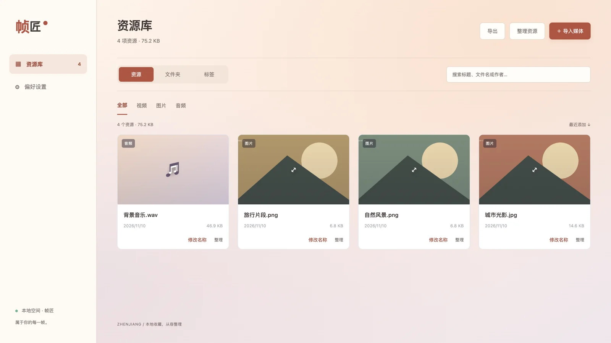

喜欢的，一起收好
批量导入视频、音频和图片，支持文件或整个目录。导入副本，保留原件。
.MP4.PNG.WAV+
你的本地素材收藏室 v{{VERSION}}
散落的视频、声音与图片，
收进一个井然有序的素材库。
留住灵感，也留出创作的空间。
macOS · Windows · Linux ／ 本地运行，无需注册
从一份素材，到一整个创作世界。
A LITTLE ORDER, A LOT OF POSSIBILITIES
文件夹、标签和清晰的预览，
让下一次寻找素材，少一点翻找。

应用实际界面 · 图中为演示素材
MADE FOR YOUR EVERYDAY COLLECTION
把常用的工具放在手边，
把注意力留给真正喜欢的内容。
批量导入视频、音频和图片，支持文件或整个目录。导入副本，保留原件。
文件夹、标签与批量整理，按项目、主题或心情，建立属于你的素材秩序。
在一个应用里预览图片、播放视频和音频，配合搜索与筛选，更快找到需要的那一份。
YOUR FILES. YOUR SPACE.
媒体文件、资源索引和整理信息保存在本机。
自由指定资源目录，也可以把整理好的素材导出，
继续下一段创作。
A SIMPLE START
使用默认资源库，或在设置中选择自己的媒体目录。
批量导入文件，为它们添加文件夹与标签。
搜索、预览、整理，再把素材带进下一次创作。
MAKE ROOM FOR INSPIRATION
下载帧匠 v{{VERSION}}，从第一份收藏开始。
为 Apple Silicon 与 Intel 准备
Apple Silicon 下载 ↗Intel 芯片下载 ↗DMG 安装包 · 当前未签名与公证安装后，即刻开启本地收藏
Windows 下载 ↗64 位系统EXE 安装包 · 当前未配置代码签名轻松带走，放进熟悉的工作流
AppImage 下载 ↗Debian / Ubuntu .deb ↗x64 · AppImage 可能需要 FUSE查看版本说明与全部下载 ↗视频封面使用可选的系统 FFmpeg；播放能力取决于实际编码。
不需要。帧匠的资源库运行在本机，媒体与整理信息保存在你的电脑上。
通过导入功能添加媒体时会复制副本，保留原件。直接指定媒体目录后，应用将管理该目录里的文件，移入回收站会移动对应文件；更改目录本身不会搬移文件。
资源索引与播放解码是两件事。能否播放取决于实际编码和 Electron 的播放能力，当前版本不会自动转码。系统 FFmpeg 仅用于视频封面提取。
选择适合本机系统与芯片架构的安装包。发布页附 SHA256SUMS.txt 可用于校验完整性。当前桌面安装包尚未配置平台代码签名，请在了解来源后决定是否安装。